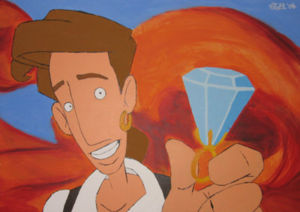
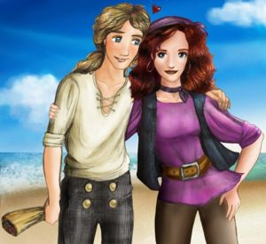

Guybrush Threepwood
 De: La Frikipedia, la enciclopedia extremadamente seria.
De: La Frikipedia, la enciclopedia extremadamente seria.
 Guybrush recogiendo su recompensa, arrrr
Guybrush Threepwood, primer damo de Isla Mêlée es un famoso pastafari que va siempre vestido de pirata y que se casó con Elaine Marley, no sin antes vivir diversas (concretamente 4) desventuras. Impidió la boda entre LeChuck y Elaine, por culpa de lo cual no se pudo crear un enorme poblado entre Mêlée y Monkey Island, con todas las ventajas que ello hubiera comportado para la economía de las dos islas.
Sin embargo, tiene un carácter muy cambiante. En su última aparición, era un calzonazos y nada tenía que ver su forma de actuar en su primera aparición. Hay quien asocia esto a que Monkey Island 4 es una verdadera aberración para la saga que se inventa cosas en el guión de mala manera y cambia los hechos históricos de las anteriores partes.
Fue acogido por la famosa marca de ron Ron Gilbert con la idea de corromper las mentes de los sanos jóvenes de los 90 debido a la ley seca establecida en Almería en el 2025 d.C. (después de Chuck)
Apariciones
 Oh mon amie, c'est l'amour
- Monkey Island 1: Aquí es un aprendiz de mierda. Sin ninguna base, sin ningún respeto, sin moral, es decir, ¡lo que tiene que ser un pirata de bien, joder!. Se enamora con sólo ver a Elaine Marley, supera 3 pruebas, salva monos dándole plátanos, va a un barco, y gana.
- Monkey Island 2: Aquí el barbas está forradísimo buscando el Big Whoop. Pero al principio del juego el Largo LaGrande le roba cual Big Whoop. Gana un concurso de beber grog.
- Monkey Island 3 "The curse of monkey island": Aquí vuelve con las ropas de su primera aventura, y es todo mas "animado", como la gracia del que escribe. Recorre islas con pollos, con caras de conejo y de pato. Aparece LeChuck. Un parque y el joven Willy el ciego. Pero Guybrush sigue siendo el mismo imbécil, y eso mola.
- Monkey Island 4: Ciertamente, aqui parece vestir como un homosexual, pero no lo es porque sigue con Elaine Marley (no, no es hija de Bob Marley ni una porreta ni nada). Aquí le toman como el malo, también va de isla en isla, y juega al Wombat Combat con los monos, pero como los monos no son wombats, se convierten en petauros y este parrafo deja de tener sentido.
Origen del nombre
Al principio iba a ser llamado "coffing ya no está de moda. El Ron Gilbert tenía el diseño, y to'a la ostia, pero no el nombre, y como chico borrador, o chico del diseño o como se quiera llamar, en ingles es Guybrush, se quedó ahi, y lo del apellido no me acuerdo.
Personajes Relacionados con Guybrush
Autor(es):
- CartDestr
- doctor grijander
- Aque
- Viento
- Loixartx
- Alex el Mono
- Clex Sipsoxard
- Finn
- Zetass
Frikipedia 2005-2016, Licencia
GFDL 1.2 - Extraído por FrikiLeaks